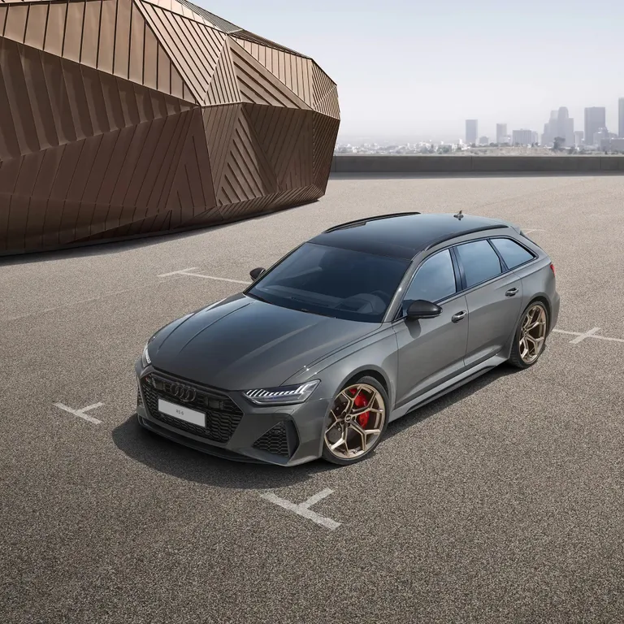

Audi RS 7 Sportback performance наповнить ваше повсякденне життя вражаючою динамікою. Доступна як опція спортивна підвіска RS plus із системою регулювання жорсткості амортизаторів Dynamic Ride Control (DRC) і пропонований як опція пакет RS Dynamic plus, що дозволяє збільшити максимальну швидкість до 305 км/год, зроблять процес водіння захоплюючим і повністю контрольованим.
Все у полі зору Ви можете налаштувати Audi virtual cockpit plus відповідно до ваших уподобань, вибравши один з трьох спеціальних режимів відображення RS. Інноваційний і повністю цифровий. Відмінною ознакою версії performance є можливість встановлення режиму відображення з білим фоном, як у гоночних автомобілях. Відчуйте потужність Цифри, що викликають повагу: V подібний 8-циліндровий двигун TFSI об’ємом 4,0 л з подвійним турбонаддувом і потужністю 630 к.с.. Прискорення від 0 до 100 км/год за 3,4 секунди
Перетворіть свій Audi A7 Sportback performance на автомобіль, що дарує натхнення, такий саме неповторний, як ви — за допомогою Audi exclusive. З кольоровою строчкою для сидінь і килимків у стилі RS, різнокольоровою шкіряною оббивкою та спеціальним лакофарбовим покриттям з широким вибором кольорів. Саме такий, яким його бачите ви
Орієнтований на спорт ексклюзивний дизайн-пакет RS blau plus зачаровує акцентами синього кольору Mercatoblau. Спортивні сидіння plus з оббивкою зі шкіри Valcona чорного кольору мають перфорацію в тон.